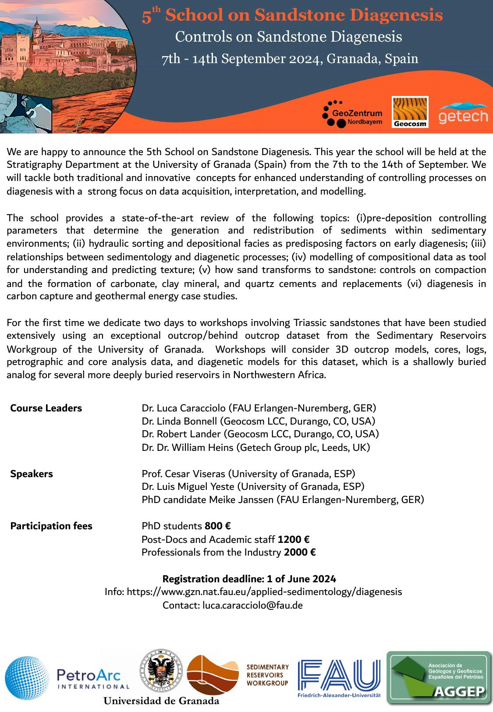
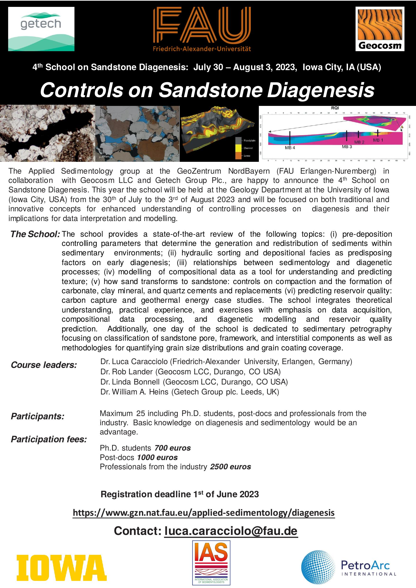
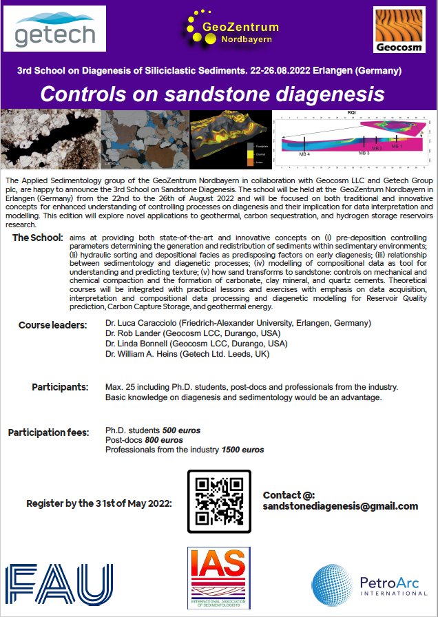
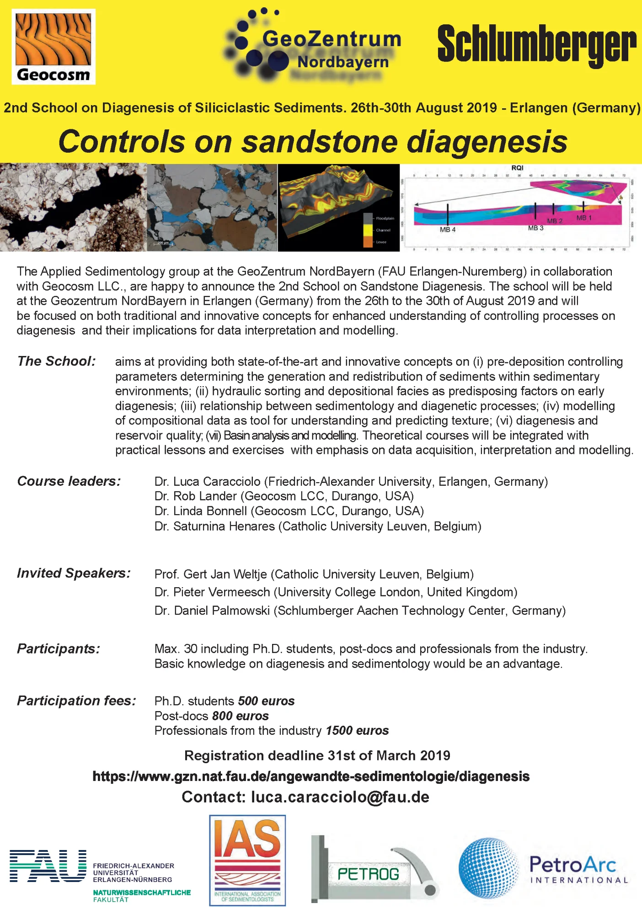
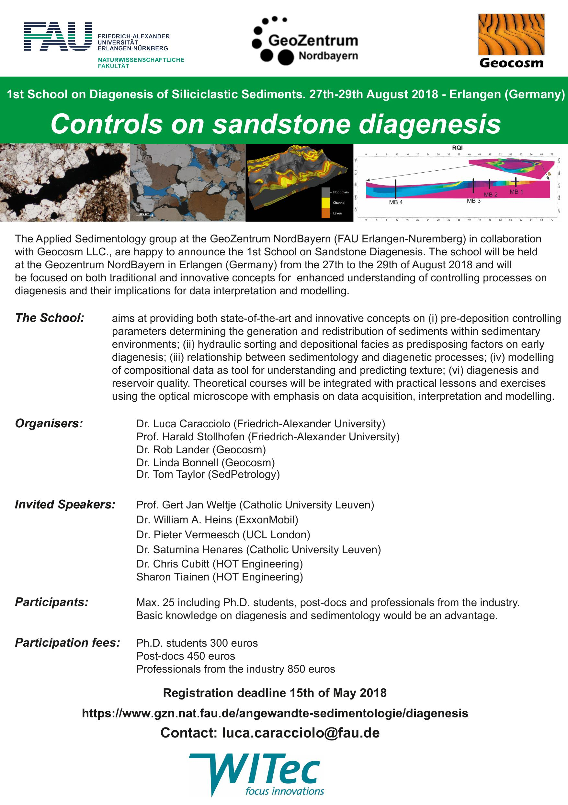

6th Edition — 2026
31 August – 4 September 2026
The 6th School of Sandstone Reservoirs will take place at the GeoZentrum Nordbayern, Friedrich-Alexander-Universität Erlangen-Nürnberg, Germany.
The 2026 edition will maintain our commitment to excellence, bringing together world-class faculty and an intensive curriculum that spans sediment generation through diagenesis to energy transition applications.
Program Details
Dates: 31 August – 4 September 2026
Location: GeoZentrum Nordbayern, Friedrich-Alexander-Universität Erlangen-Nürnberg, Germany
Format: In-person with field/lab components
Capacity: Limited to 25 participants
Target Audience:
- PhD students in sedimentology, stratigraphy, and reservoir geosciences
- Postdoctoral researchers
- Industry professionals in oil & gas, geothermal, and energy transition sectors
Hands-On Practice
The School emphasizes practical application through intensive workshops and exercises:
Sediment Character and Composition
- Exercise: Predicting sediment composition from drainage basin characteristics
- Introduction to sedimentological modeling
Burial History Modeling
- Burial and stress modeling workshop
- Thermal modeling live demonstration
Diagenetic Modeling
- Diagenesis simulation workshop (multi-session)
- Forward modeling of diagenesis and reservoir properties
- Predicting reservoir quality
Core and Well Analysis
- Core analysis: braided river systems
- Core analysis: meandering river systems
- Well interpretation workshop
- Petrography and petrophysics integration
Registration Information
Registration will open: To be announced
Application Requirements:
- Current CV
- Cover letter (max 500 words) describing your research/career goals and motivation for attending
Participation Fees:
- PhD students: €800
- Postdoctoral researchers: €1,200
- Industry professionals: €2,000
Fees cover instruction, materials, field trips, and social events. Accommodation and travel are not included.
Selection Criteria:
- Quality of application
- Relevance to career/research development
- Global representation
Interested in the 2026 edition? Contact us to receive updates on dates, registration, and program details.
Past Editions
5th Edition — University of Granada, Spain
7-14 September 2024

[Description to be added]
4th Edition — University of Iowa, USA
30 July - 3 August 2023

[Description to be added]
3rd Edition — FAU Erlangen-Nuremberg, Germany
22-26 August 2022

[Description to be added]
2nd Edition — FAU Erlangen-Nuremberg, Germany
26-30 August 2019

[Description to be added]
1st Edition — FAU Erlangen-Nuremberg, Germany
27-29 August 2018

[Description to be added]